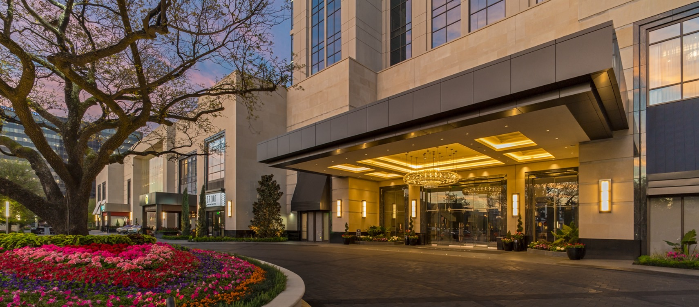

交通資訊
慶記商旅機場接送服務
- 需要機場接送服務者，請在線上訂房的備註欄填寫，或於訂房後向旅館櫃檯申請。
- 機場接送為單趟接駁服務，不含早餐。
- 接機(無台灣電話)須加舉牌費$200，以利司機現場聯繫
- 務必於入住前一晚告知飯店方接駁正確資訊，以利預約車輛。
- 請確實告知接駁人數以及行李件數大小：
- 小車(1-2位)行李箱(含紙箱)最多2件
- 大車(3-4位)行李箱(含紙箱)最多4件
- ※若人數、行李數與實際上車不符，司機有權拒載且不退費。
- 恕不接受當日更改接駁時間，若因個人行程安排等因素而須更改時間，則須請您自行處理前往機場或抵達飯店，相關衍生費用需請您自行支付。
- 另非本旅店之責而導致無法履行此行程，已收之款項旅店端將不退費。
- 嬰兒及孩童：0歲~6歲以下者，可同行入住不收費，視為不佔床、請留意為符合行車法規接駁費將另計。
慶記商旅交通資訊
- 大眾交通工具：
- 台中市公車23、72、107皆可到達，下車站牌 -- 公益東興路口
- 從台中火車站可搭乘27號公車往嶺東科技大學，下車站牌 -- 公益東興路口
- 台中火車站可搭乘81號公車往統聯轉運站，下車站牌 -- 公益東興路口
- 綠川東站可搭乘70號往嶺東科技大學，下車站牌 -- 公益東興路口
- 後火車站可搭乘60號往坪頂，下車站牌 -- 大墩公益路口
- 從秋紅谷可搭60號公車往大智公園，下車站牌 -- 大墩公益路口
- 從統聯轉運站可搭乘81號公車往太平，下車站牌 -- 公益東興路口
- 停車場資訊：
- 本大樓附設地下停車場(B3)：平日30元/H，假日40元/H
- 台灣聯通大墩11街入口：平日15元/0.5H，假日20元/0.5H
- 台灣聯通大昌街入口(B3)：平日／假日：30元/H
- 來來停車場：平日白天20元/H，假日30元/H
- 公益路停車場：平日／假日：40元/H